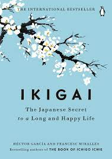

BOOK 14

"Ikigai" by Héctor García and Francesc Miralles
The Japanese Secret to a Long and Happy Life" is a book written by Héctor García
and Francesc Miralles.Published in 2016, the book explores the concept of "ikigai,"
a Japanese term that combines "iki" (life) and "gai" (value or worth). It delves into
the principles of finding purpose and joy in one's life by discovering the intersection
of passion, vocation, profession, and mission.